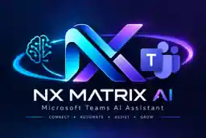
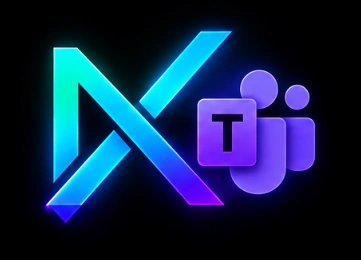

⌘
Chat interface
Receives text messages through the Microsoft Teams SDK and sends the generated answer back to the conversation.

NX MATRIX AINX Matrix AI is a Python-based Teams bot that routes chat messages to local Ollama models or hosted OpenAI-compatible language-model APIs. This project hub explains what it does, how messages flow, and how to run it on Windows.

The bot is the bridge between a Teams-compatible chat surface and a model API. Model selection is configuration-driven; the Python code uses the same Chat Completions request format for local Ollama and compatible hosted providers.
Receives text messages through the Microsoft Teams SDK and sends the generated answer back to the conversation.
Set API_BASE_URL, API_KEY, and API_MODEL in a local .env file. Ollama is the default example; hosted endpoints are also supported.
Use a setup menu, a one-click local launcher, an API check, Python tests, and a guarded development-tunnel script.
The service listens locally on port 3978 by default. The model endpoint is separate; the bot sends an HTTP request and relays the response to the user.
A user sends a message in Agents Playground or an installed Teams app.
The SDK receives the activity at /api/messages.
src/main.py calls /chat/completions with system and user messages.
Ollama or a hosted compatible provider generates the answer.
The bot sends text back to the same chat; expected API errors are handled safely.
src/main.py message handler and model request · check_api.py provider connectivity · check_tunnel_config.py tunnel safety validation · tests/ unit tests.
A working local chat does not register a Teams bot, create a Teams manifest, or grant tenant permissions. Real Teams deployment is a separate setup step.
Use the single launcher for local development, or follow the explicit two-terminal path when you want to see each service separately. No public tunnel is started automatically.
git clone https://github.com/ns-matrix/nxmatrix-teams-ai.git cd nxmatrix-teams-ai
Double-click setup.bat. It creates .venv, installs dependencies, and copies .env.example to .env without overwriting an existing configuration. Choose the configuration or test options as needed.
Double-click start_all.bat. Choose local Agents Playground mode only if you will use the bot on localhost. The launcher does not start a public tunnel.
Use Microsoft 365 Agents Playground with the local endpoint http://localhost:3978/api/messages. Keep the bot terminal open while testing.
git clone https://github.com/ns-matrix/nxmatrix-teams-ai.git cd nxmatrix-teams-ai setup.bat
Complete setup and exit the menu. Open .env in Notepad when requested.
ollama list ollama pull qwen2.5:3b
Skip the pull if the model is already listed. Ollama must be running for a local model.
run_local.bat
Keep this terminal open. The local endpoint is http://localhost:3978/api/messages.
Open Microsoft 365 Agents Playground, configure the local bot endpoint, and send a test message. The exact UI may vary by Playground version.
Only for an authenticated registered bot: keep the bot running, remove the local bypass, configure all three Teams credentials, then run run_tunnel.bat. Never expose an unauthenticated local bot through a public tunnel.
Open .env and set the provider's exact URL, key, and model identifier. Keep the key private; do not commit the file.
API_BASE_URL=https://api.openai.com/v1 API_KEY=your_real_api_key API_MODEL=gpt-4o-mini API_TIMEOUT_SECONDS=120 BOT_PORT=3978
Then run .venv\Scripts\python.exe check_api.py. Use the model name and endpoint supported by your provider.
API_BASE_URL=http://127.0.0.1:11434/v1 API_KEY=ollama API_MODEL=qwen2.5:3b API_TIMEOUT_SECONDS=120 BOT_PORT=3978 SYSTEM_PROMPT=You are NX Matrix AI, a professional business assistant.
Local Playground only: set DANGEROUSLY_ALLOW_UNAUTHENTICATED_REQUESTS=true for localhost testing. For authenticated Teams use valid CLIENT_ID, CLIENT_SECRET, and TENANT_ID and keep the bypass unset. Never combine local bypass mode with a public tunnel.
Use the explicit local emulator bypass only while the bot listens on localhost. Keep API keys in .env; stop the process with Ctrl+C when finished.
Requires a registered bot, valid credentials, an HTTPS messaging endpoint, a Teams app package, and a Microsoft 365 work/school tenant with appropriate permissions. A personal Microsoft account may not provide those tenant features.
.venv\Scripts\python.exe check_api.py .venv\Scripts\python.exe -m compileall -q src check_api.py tests .venv\Scripts\python.exe -m unittest discover -s tests -v .venv\Scripts\python.exe -m pip check
Unit tests use mocked responses and do not require a live model. The API check requires the configured provider to be reachable.
Confirm Ollama is running, run ollama list, and verify API_BASE_URL.
Check the hosted API key, account permissions, and model access.
Check the base URL and model ID. The provider must support Chat Completions.
For localhost Playground only, explicitly enable the local mode. Real Teams needs registered credentials and tenant permissions.
The messaging route is /api/messages. The root URL is not a web chat UI; use Agents Playground.
Start the bot first, then start the tunnel in a separate terminal. The ports must match.
Read the implementation and open issues.
Inspect the setup menu and one-click launcher.
Detailed project instructions and configuration reference.